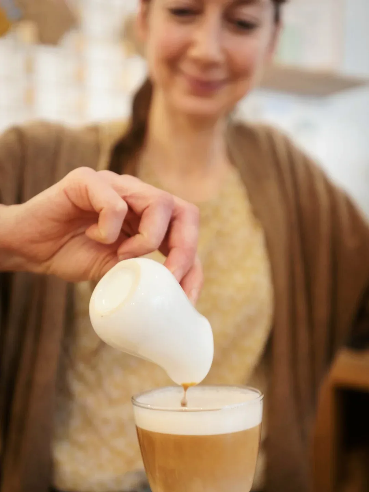
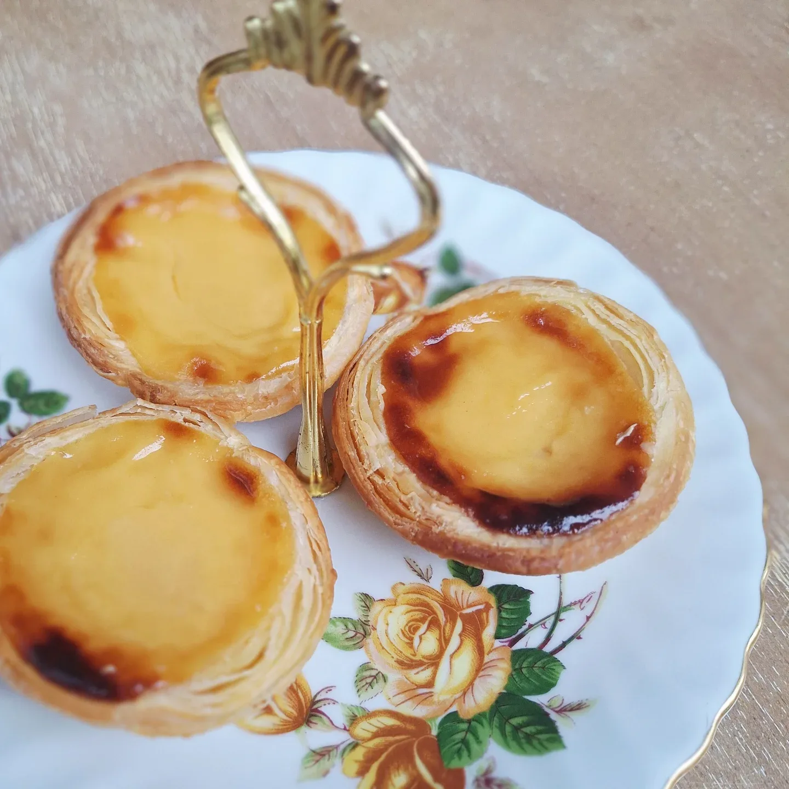
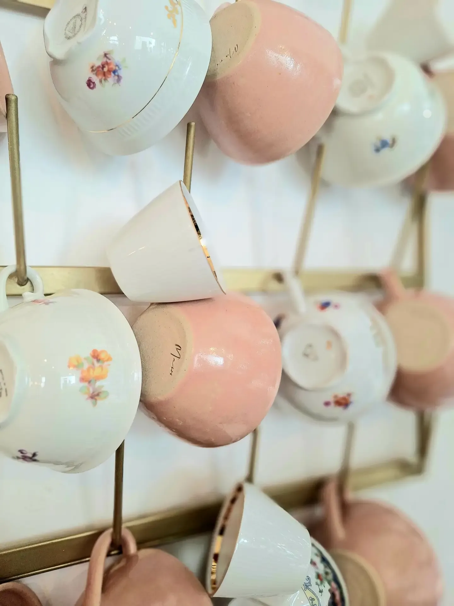

Koffie, taart en een kaartje dat ik voor je post.
Specialty koffie, thee en zelfgebakken taart, tussen de planten en het rotan. Schrijf je hier een kaartje, laat het dan achter in het rek. Ik zorg dat het vertrekt.
Een koffietje, en iets erbij.
Wat er op de toog staat, wisselt. Soms is de rijsttaart al op voor ik er een foto van kon nemen.




Schrijf een kaartje. Ik post het voor jou.
Postbar is een koffiebar met een papierwinkeltje. Je kiest een kaartje uit de muur, schrijft het aan tafel bij je koffie en laat het achter. Dat doe ik nu al zeven jaar.
- 1
Kies een kaartje
Elk seizoen komen er nieuwe illustratoren bij in de Postbar-collectie. Vaak ontwerpen die je niet snel ergens anders vindt.
- 2
Schrijf het hier
Neem gerust je tijd, met een koffie of een thee erbij.
- 3
Laat het achter in het rek
Ik zorg dat het op de post gaat. Jij hoeft er niets meer voor te doen.


Taart op bordjes van de brocante.
Het gebak maak ik zelf. En de bordjes en schaaltjes waarop het komt, zoek ik op reis bij brocantezaakjes, tot ik er een vind dat perfect past bij mijn taart. Daar word ik vrolijk van.
"Bon. Het was de bedoeling deze ochtend melding te maken van een goudgeel gebakken rijsttaart, romig, rijkelijk bespikkeld met vanillezaadjes en heerlijk geurend. ;) Dat is mij niet gelukt, het was simpelweg te druk en ondertussen aten jullie hem volledig op. :)"
Goede koffie, en tijd om ervan te genieten.
Ik schenk specialty koffie, een hele rij theesoorten en frisse dranken. Kom je met je laptop om wat werk te verzetten? Ook dat mag gewoon.
Specialty koffie
Van espresso tot een romige latte.
Thee
Meer dan twintig soorten, met af en toe een mix van het seizoen.
Frisse dranken
Voor de warme dagen op de Langestraat.
Laptop welkom
Een rustig plekje om even door te werken.

"De koffie is er top, het gebak mogelijk nog beter."
Francis Gevaert · Google
Achteraan wacht de huiskamer.
Rotan stoeltjes, een bakstenen muur vol kaders en hoekjes waar je vergeet dat je buitenshuis bent. Zonder haast, met je drankje of je taartje.
"Een plaats waar je royale goede koffie wordt geserveerd door een dame die je haar lach er zomaar bijschenkt. (...) Vergeet zeker niet de trapjes op te gaan want in de kleine “huiskamer” achteraan merk je niet op dat je buitenshuis bent."Frederik Debrouwer · Google
"Gezellig plekje om een koffietje te drinken en/of een taartje te eten. Uitgebreid aanbod aan kaartjes, vaak originele exemplaren die je niet snel in andere zaken terugvindt."Charlotte V · Google
"Fantastische bar met heerlijke drankjes en taartjes, prachtige kaartjes en de beste gastvrouw die je je maar kan wensen."Eva Vandenbon · Google
Tot in de Langestraat.
Langestraat 82
8000 Brugge
Sinds november 2019 in Brugge.
Zeven jaar koffie schenken, taarten aansnijden en jullie kaartjes verzenden. Bedankt om telkens weer binnen te springen.
Elke zomer sluit Postbar vier weken voor verlof. De data zet ik op tijd op Instagram.